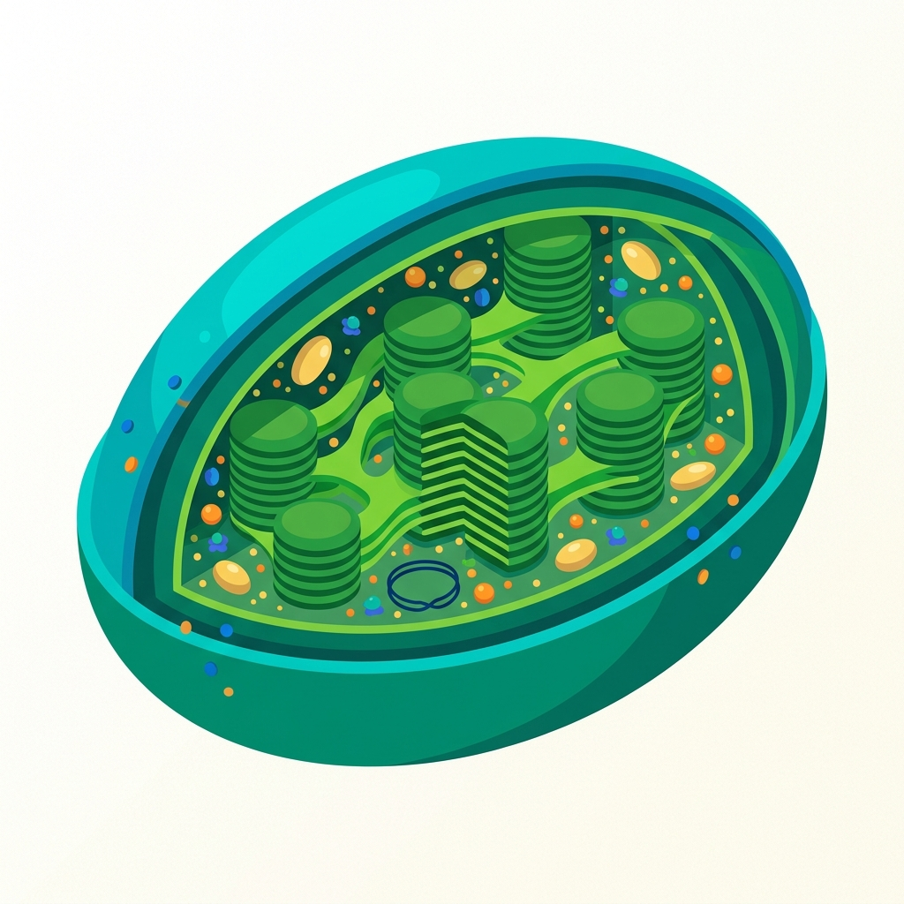

¡Bienvenido! Hoy exploraremos cómo las plantas transforman la luz en vida.
Objetivos de Aprendizaje
Analizar el proceso de conversión de energía lumínica en energía química.
Identificar la función del ATP y el NADPH como transportadores intermediarios.
¿De dónde viene tu energía?
Cada vez que te mueves o piensas, usas energía que originalmente vino del Sol. ¿Cómo crees que esa energía solar llega a tus células?
Conceptos Fundamentales
ATP (Adenosín Trifosfato): La "moneda" energética de la célula. Almacena energía lista para ser usada.
NADPH: Un potente transportador de electrones que lleva energía química a la fase oscura.
1. Fase Lumínica
Ocurre en los tilacoides. La luz golpea la clorofila, rompe moléculas de agua (fotólisis) y libera oxígeno. Aquí se cargan las baterías: el ATP y el NADPH.
💡 Dato clave: Sin agua y luz, no hay carga de energía.
2. Fase Oscura (Ciclo de Calvin)
Ocurre en el estroma. No necesita luz directa. Usa el ATP y el NADPH fabricados antes para convertir CO₂ en glucosa (azúcar).
🍎 Resultado: ¡Comida para la planta y para nosotros!
Explora el Cloroplasto
Haz clic en las partes del cloroplasto para aprender más.

Desafío de Energía
¿Cuál es la función principal del ATP y el NADPH en la fotosíntesis?
Ordena el Proceso
Haz clic en los pasos en el orden correcto (1 al 3):
¿Por qué importa?
Sin la fotosíntesis, la atmósfera no tendría oxígeno y no habría base para las cadenas alimenticias. Si los cloroplastos dejaran de funcionar mañana...
Reflexión
¿Qué parte del proceso de fotosíntesis te pareció más sorprendente?
¿Cómo explicarías el rol del ATP a alguien que no sabe de biología?
Tómate un momento para pensar en lo aprendido.
¡Felicidades!
Has completado la lección sobre Fotosíntesis.
Ahora comprendes cómo la energía solar se convierte en la base de la vida. ¡Sigue explorando!